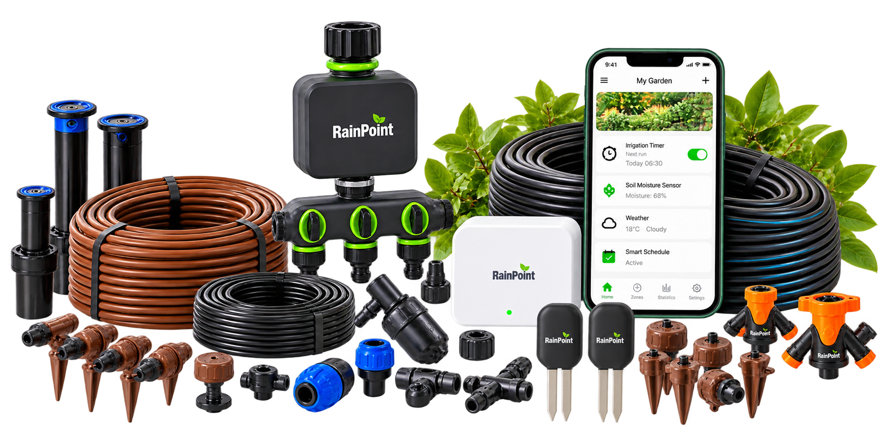

Above-Ground Systems
Flexible and cost-effective drip and micro-irrigation for beds, shrubs, trees and garden planting.
Explore above-ground →
PROFESSIONALLY INSTALLED
BY ROB & TOM
For Residential & Commercial Properties Across London, Berkshire, Surrey & Buckinghamshire
Smarter watering that saves water and saves time. Tailored, automated irrigation for flowers, shrubs, borders, trees and garden planting.
Beautiful gardens,
whatever the weather.

Targeted watering where plants need it.
Automated schedules reduce daily watering.
Adjust schedules as conditions change.
Quality components built for long-term performance.
We design, install and maintain tailored garden irrigation systems for residential and commercial properties.
A SYSTEM DESIGNED AROUND YOUR GARDEN
Our irrigation systems include above-ground drip irrigation, underground drip irrigation, micro-irrigation and pop-up lawn sprinklers. These systems can be used separately or combined in any configuration to suit your garden. We use high-quality components, ensure neat installations and offer smart control options. With every irrigation system we install, all non-drip water supply pipes crossing pathways and other walking areas are discreetly buried beneath them.
Flexible and cost-effective drip and micro-irrigation for beds, shrubs, trees and garden planting.
Explore above-ground →A discreet solution with irrigation pipe routed beneath patios, paths and other garden areas where required.
Explore underground →Automatic timers, smart controllers, seasonal adjustment and continued support after installation.
See our services →KEEPING UP WITH IRRIGATION TECHNOLOGY
We monitor developments in garden irrigation and keep our installations aligned with modern watering technology, smart controls and water-efficient techniques.
WATER-EFFICIENT IRRIGATION
Some water companies provide exemptions for certain drip irrigation systems because water is delivered directly and efficiently to the plants.
Restrictions and exemptions vary between water companies. Always check the current rules issued by your local supplier.
Rob & Tom Garden Irrigation provides professional garden irrigation installation, maintenance and repair services across London, Berkshire, Surrey and Buckinghamshire.
Including areas such as Windsor, Ascot, Weybridge, Guildford, Marlow, Wimbledon, Egham, Reading, Henley-on-Thames, Godalming and Richmond, as well as surrounding towns and villages.
We are Rob & Tom, providing professional garden irrigation installations across London, Berkshire, Surrey and Buckinghamshire. We have been in the garden irrigation business for 8 years, designing and installing watering systems for gardens of different sizes and layouts.
We design each system around the individual garden rather than taking a one-size-fits-all approach. From discreet dripline for flower beds, shrubs and hedges to underground pipework, automated timers and smart watering controls, we aim to make garden watering simple, reliable and efficient.
We take particular care with neat installation and practical pipe routing, keeping visible pipework to a minimum wherever possible.
Beautiful garden no matter the weather.Contact Rob & Tom for a free garden irrigation quote.